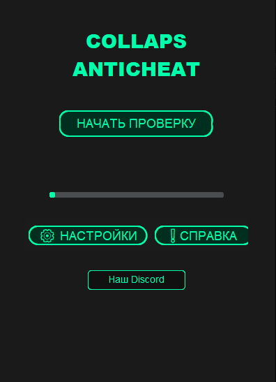

О программе
Наша программа предназначена для быстрой и удобной проверки на читы. Она была разработана командой из 8 человек и поддерживает множество платформ. Программа проста в использовании и обеспечивает высокую производительность.
Функции программы
- Удобный интерфейс
- Высокая производительность
- Поддержка различных платформ
- Быстрая проверка
Скачать
Выберите версию программы для скачивания:
Скачать(NEW CHECKER) Скачать(OLD CHECKER)